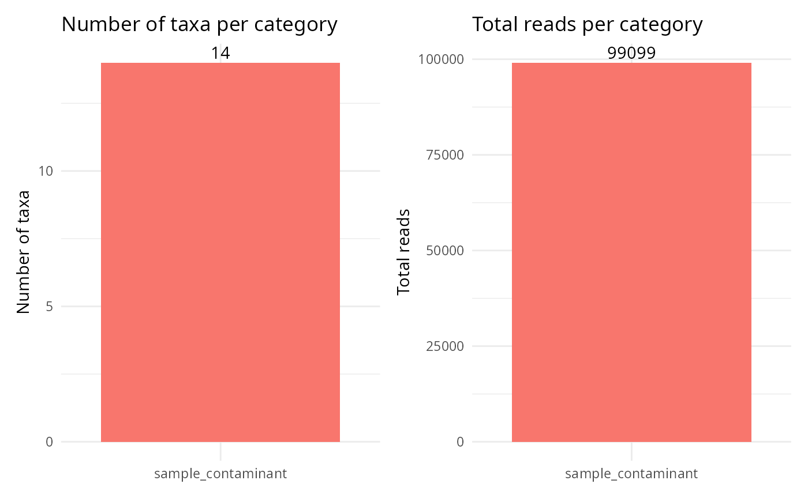

Classify taxa found in negative controls into contamination categories
Source:R/neg_control_classify.R
neg_control_classify_pq.Rd
Examine taxa detected in negative-control samples and assign each to one of three contamination categories based on read abundance and occurrence patterns:
artifact: very low total reads AND present in very few samples – likely sequencing noise or index hopping.
lab_contaminant: predominantly found in negative controls relative to real samples – likely introduced during library preparation or extraction.
sample_contaminant: detected in negative controls but also widespread in real samples – may represent genuine biological signal or index bleed.
This complements contam_corr_pq() (a correlation-based method) and
neg_control_diag_pq() (a diagnostic figure) by producing an explicit
per-taxon category.
Usage
neg_control_classify_pq(
physeq,
neg_control,
min_reads_artifact = 10,
max_samples_artifact = 2,
max_ratio_lab_contam = 0.2,
min_neg_samples_lab = 2,
heatmap = TRUE
)Arguments
- physeq
(phyloseq, required) A phyloseq object.
- neg_control
An expression evaluated on sample_data that returns TRUE for negative-control samples (e.g., is_control == TRUE,sample_type == "blank"). Use.to refer to the phyloseq object.- min_reads_artifact
(numeric, default: 10) Maximum total reads (across all samples) for a taxon to be considered an artifact.
- max_samples_artifact
(integer, default: 2) Maximum total number of samples (negative + non-negative) in which a taxon may appear to be considered an artifact.
- max_ratio_lab_contam
(numeric, default: 0.2) Maximum ratio of non-negative-control sample occurrences to negative-control sample occurrences (
n_non_neg_samples / n_neg_samples) for a taxon to be classified as a lab contaminant. Values near 0 indicate a taxon almost exclusively found in controls.- min_neg_samples_lab
(integer, default: 2) Minimum number of negative-control samples a taxon must appear in to be eligible for the lab-contaminant category. Prevents rare noise from being mislabeled.
- heatmap
(logical, default: TRUE) If TRUE, build a pheatmap of negative-control abundances annotated by category. Requires the pheatmap package.
Value
A named list with five elements:
classificationA
data.framewith one row per taxon detected in at least one negative control. Columns includetaxon,total_reads,reads_in_neg,reads_in_samples,n_neg_samples,n_non_neg_samples,ratio_non_neg_to_neg,category, and taxonomy columns if atax_tableis present.summary_plotA patchwork plot of the number of taxa and total reads per contamination category.
distribution_plotA violin + jitter plot comparing the distribution of total reads across categories (log scale).
heatmap_by_categoryA
wrapped_pheatmapobject (print it withprint()) orNULLwhenheatmap = FALSE.ordination_plotA PCoA ordination (Bray-Curtis) with negative controls highlighted, or
NULLif ordination fails.
Examples
library(MiscMetabar)
data(data_fungi)
# \donttest{
# Mark the three lowest-depth samples as mock negative controls
pq <- mutate_samdata_pq(
data_fungi,
is_control = sample_sums(.) < sort(sample_sums(.))[4]
)
res <- neg_control_classify_pq(pq, is_control, heatmap = FALSE)
table(res$classification$category)
#>
#> artifact lab_contaminant sample_contaminant
#> 0 0 14
res$summary_plot

# }